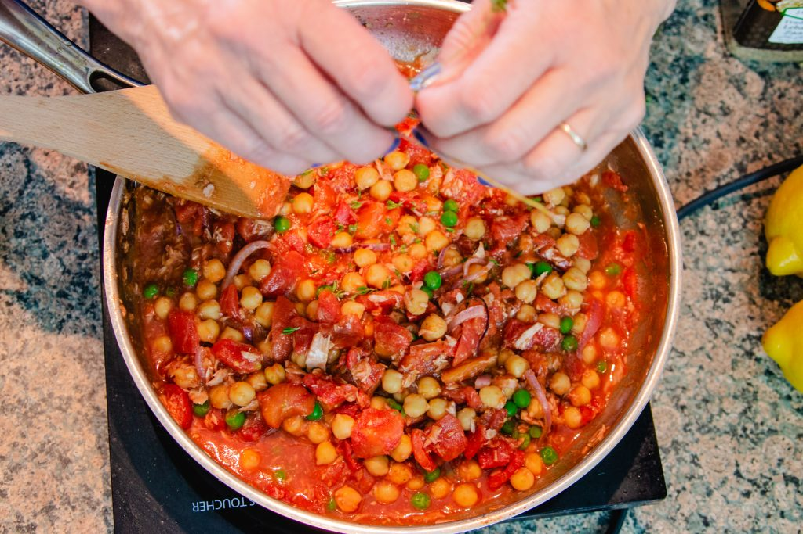

Home

This Tex-Mex Ground Beef and Potato Skillet is a hearty, one-pan meal loaded with bold flavor and family-friendly comfort. Savory ground beef is browned and simmered with Home-style potatoes, sweet corn, zucchini, and diced tomatoes with green chilies, creating a colorful and satisfying dish with a Tex-Mex kick. A blend of taco seasoning and cumin brings warmth and spice, while melted Cheddar cheese adds a rich, creamy finish.
Perfect for busy weeknights, this skillet dinner and fun appetizer comes together in just over 30 minutes and can be served straight from the pan. Enjoy it with warm flour tortillas or crunchy tortilla chips, and top with sour cream and green onions for a fresh, restaurant-style touch.
General Note
Heat over a large skill over medium heat. Add the ground beed and cook, breaking it into small pieces until browned and crumbly. Make sure to drian any excess fat.
Stir in thawed potatoes, corn, zucchini, beef browth, diced tomatoes with greenchilies. Season generously with raco seasoning and cumin. Season with salt and pepper to taste.
Bring the mixture to a boil. Cover, reduce heat and let it simmer for 20-25 minutes, or until the vegetables are tender. Taste and adjust seasonsings if needed
Stir in the shredded cheddar cheese and allow it to melt into the skillet. Remove from heat. Garnish with sour cream and sliced green onions. Then it's good to serve!